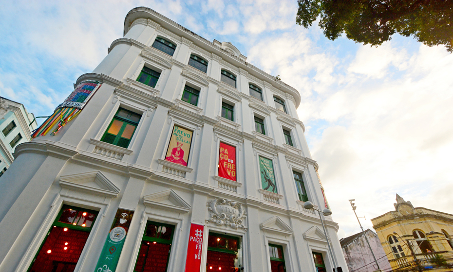
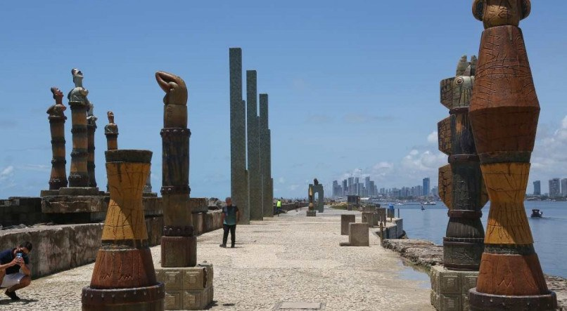

Paço do Frevo
Localizado no coração do Recife Antigo, o Paço do Frevo é um espaço dedicado à celebração e à preservação da cultura do frevo, dança tradicional do Carnaval pernambucano. Com exposições interativas, oficinas e apresentações, o local é um mergulho profundo nessa tradição tão rica.
Parque das Esculturas Francisco Brennand
O Parque das Esculturas Francisco Brennand é uma homenagem ao renomado artista pernambucano e fica situado no píer do Recife Antigo. Com uma vista deslumbrante para o mar, o local exibe diversas obras de arte, incluindo a famosa Coluna de Cristal, um monumento de 32 metros de altura.